I led an initiative to improve the Browse experience on the IDAGIO web product, working within tight constraints, by producing compelling prototypes and collaborating with our in-house classical music experts.
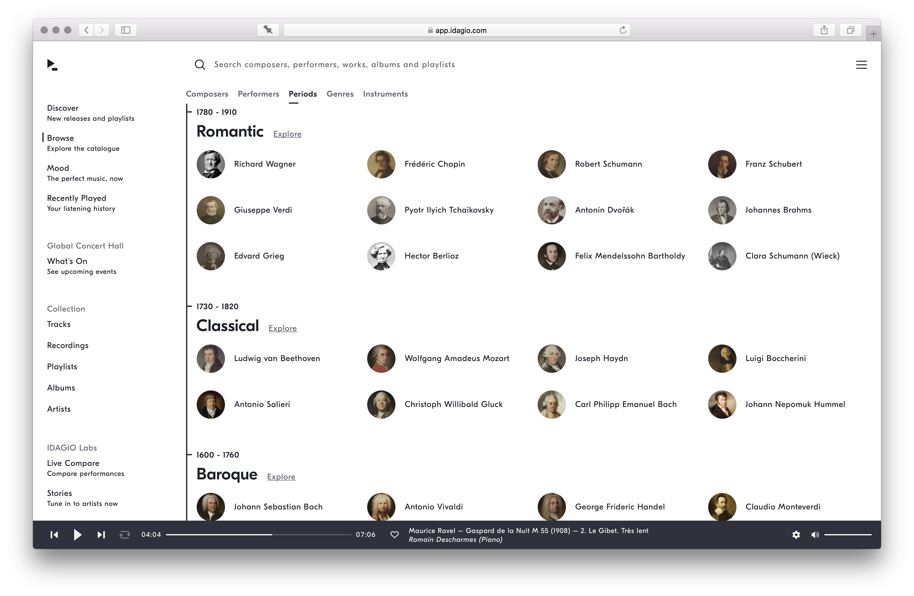The "Browse" screen was the second most-viewed screen in the web application, but had remained in MVP form — a short, static, hard-coded list of the most popular composers and performers — since the initial launch of the app.
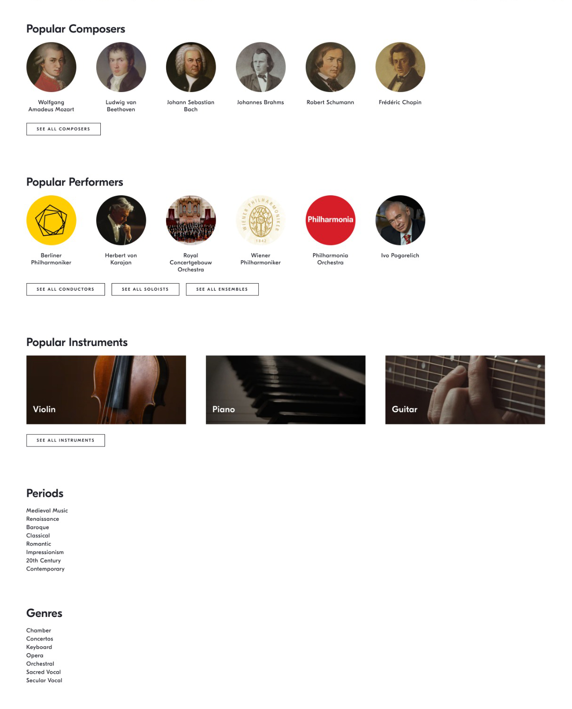
Our focus on growth meant that the deeper aspects of the product — aspects which embodied the real value of the platform — were rarely the focus of our efforts. There were often conversations about improving the Browse experience with contextual search or personalised recommendations, but these were always negated by a lack of back-end resources or the infeasibility of cross-platform feature development.
I knew that we could make a significant improvement to the screen by exploring the problem while keeping the scope of the solution realistic, according to the technical constraints.
Our two core user segments — classical music experts and non-experts — had different needs and expectations relating to the Browse experience. Experts wanted depth, diversity and expertise; non-experts needed orientation and easy entry points for exploration.
I looked at each section of the screen through these two lenses, identifying changes we could make the experience better for both user segments.
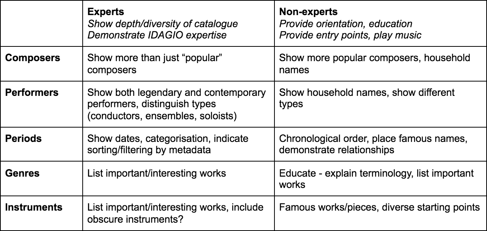
The solution:
Composers view: show more famous composers as starting points for exploration, and more diverse and contemporary composers to demonstrate the depth of the catalogue.
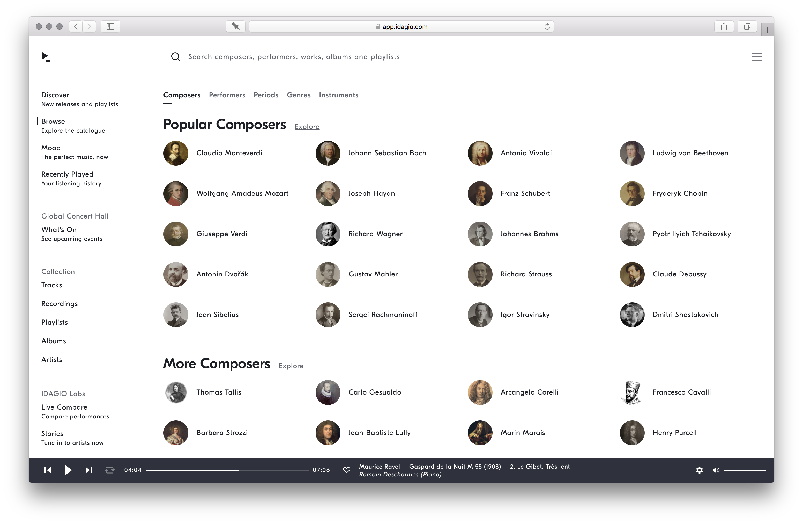Performers view: show more household names as starting points for exploration, and expose the second layer of metadata to distinguish different types of performers.
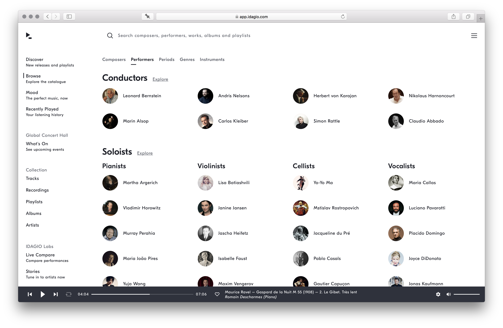Periods view: show significant composers of each period on a timeline, demonstrating the metadata model and providing orientation.
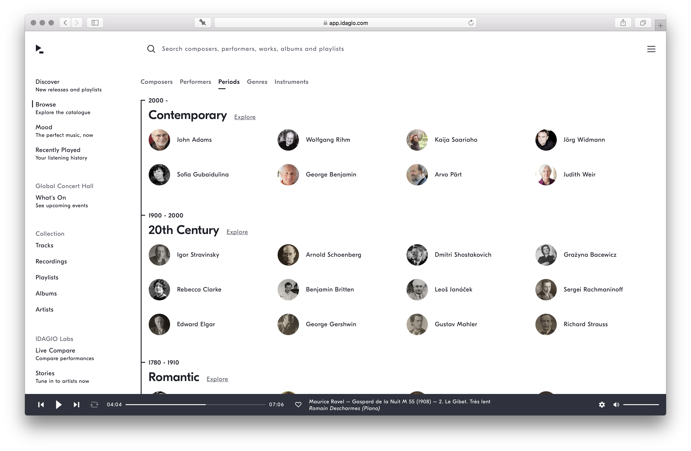 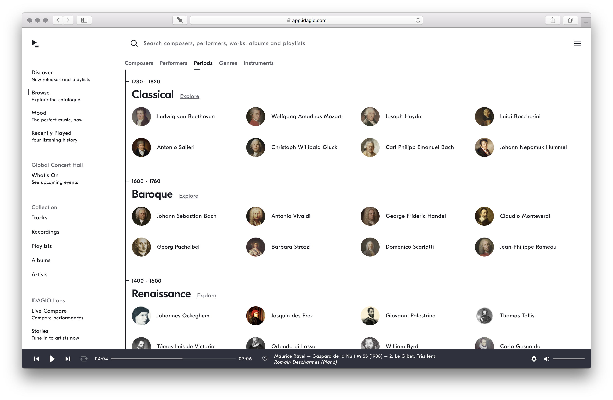Genres view: list important and interesting works, each linking to a popular recording. Provide a short explanation of the terminology.
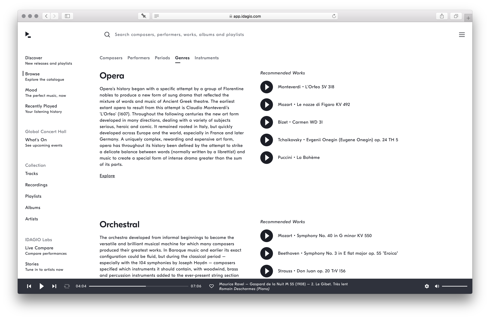 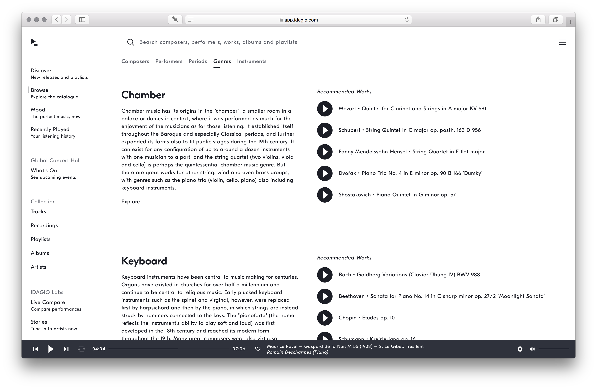Instruments view: list important and interesting works, each linking to a popular recording.
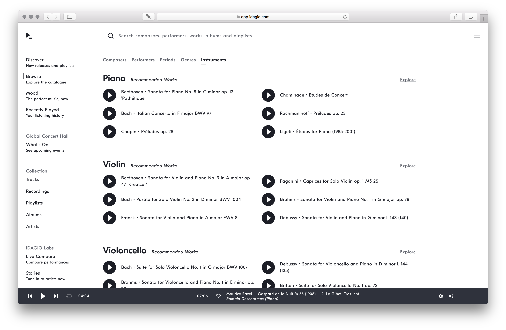 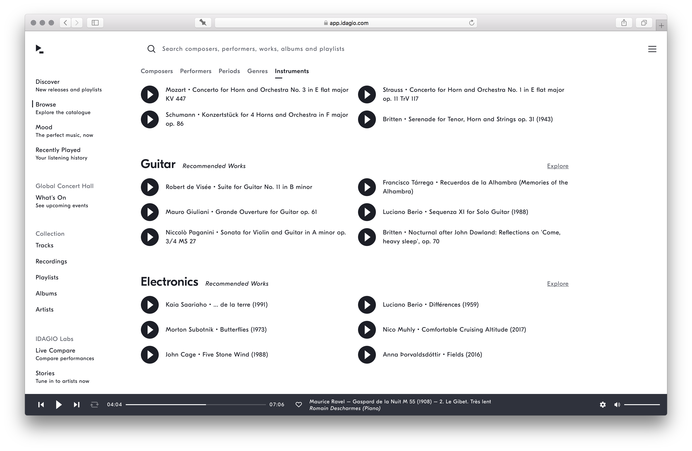